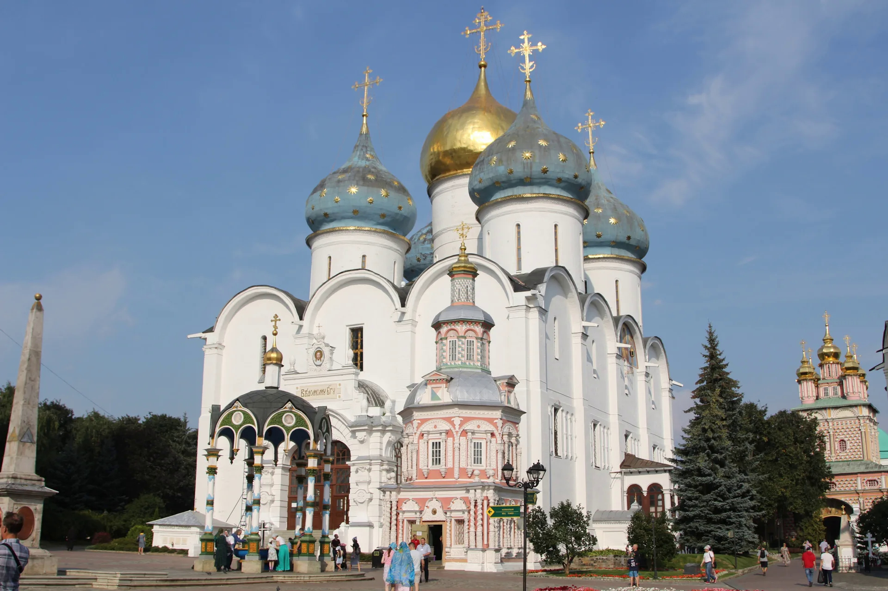
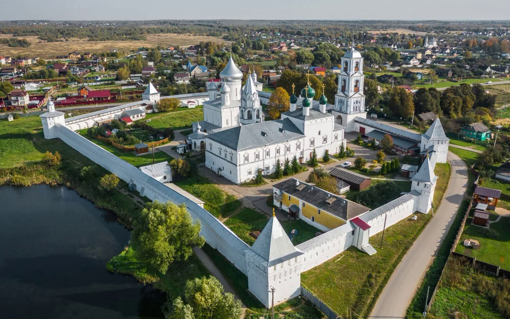
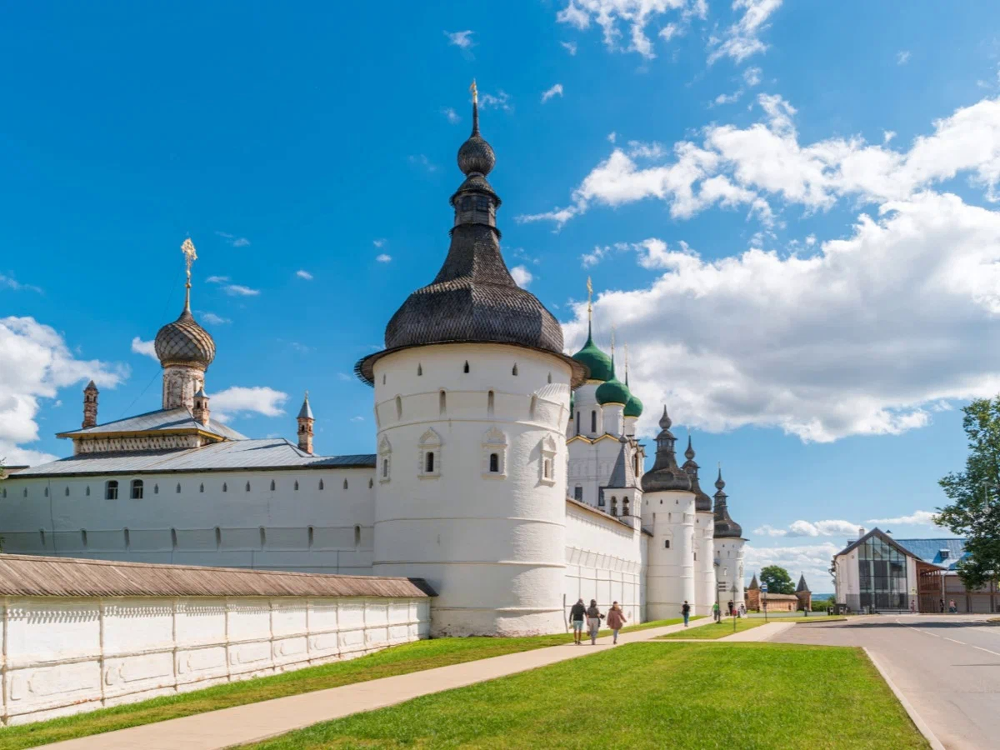
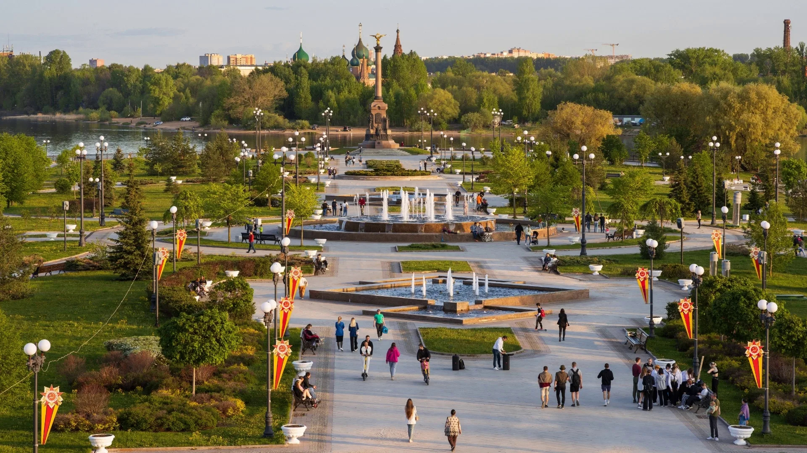
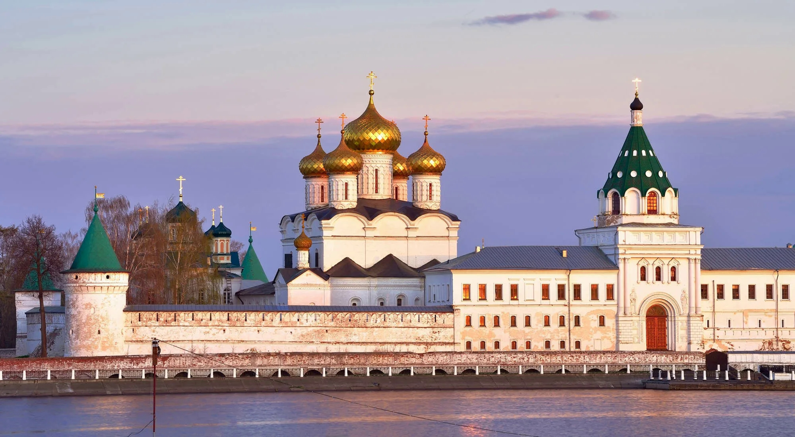
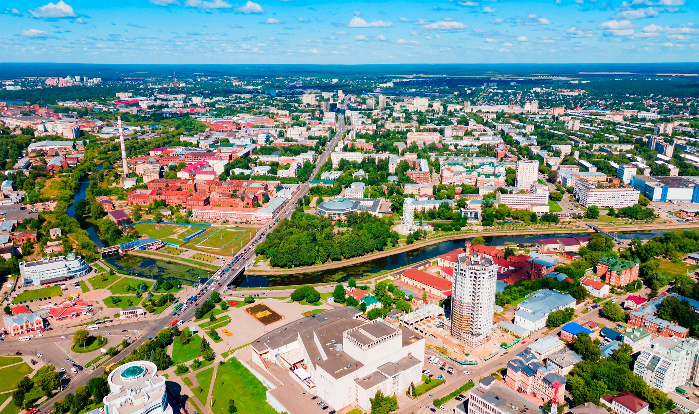
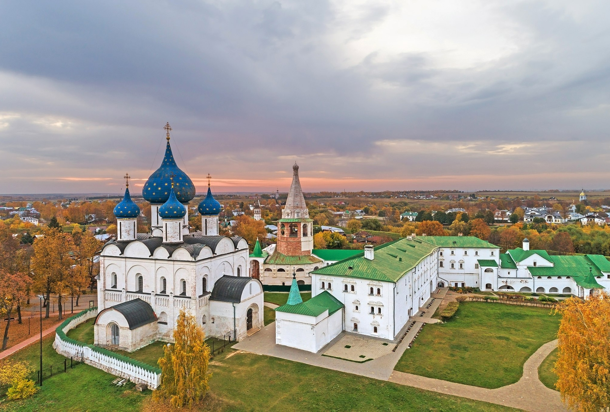
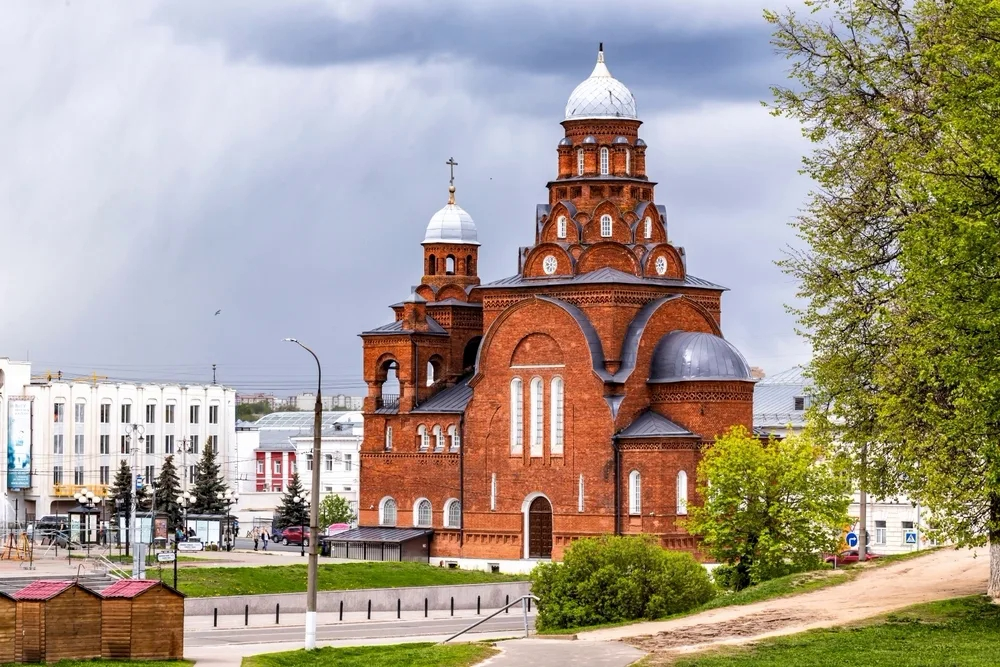

Города маршрута
Классический маршрут Золотого кольца включает восемь городов. Ниже — коротко о каждом из них.
Сергиев Посад

Главная достопримечательность — Троице-Сергиева лавра, крупнейший мужской монастырь России. От Москвы ехать около 70 км.
Переславль-Залесский

Город на берегу Плещеева озера, где Пётр I строил свою «потешную флотилию». Здесь сохранились Спасо-Преображенский собор и монастыри.
Ростов Великий

Один из древнейших городов России, стоит на берегу озера Неро. Известен Ростовским кремлём и знаменитой звонницей.
Ярославль

Крупный город на Волге, основанный в XI веке. Исторический центр включён в список Всемирного наследия ЮНЕСКО.
Кострома

Город с уникальной веерной планировкой улиц. Славится Ипатьевским монастырём и торговыми рядами в центре.
Иваново

Известен как «город невест» и центр текстильной промышленности. Здесь интересна архитектура конструктивизма.
Суздаль

Город-музей под открытым небом. Здесь больше 30 церквей и монастырей, а улицы выглядят почти так же, как сто лет назад.
Владимир

Древняя столица Северо-Восточной Руси. Обязательно стоит увидеть Успенский собор, Дмитриевский собор и Золотые ворота.
Совет по поездке
Если едешь впервые, лучше не пытаться объехать все восемь городов за один раз. На 3–4 города уходит 4–5 дней, и это нормальный темп.